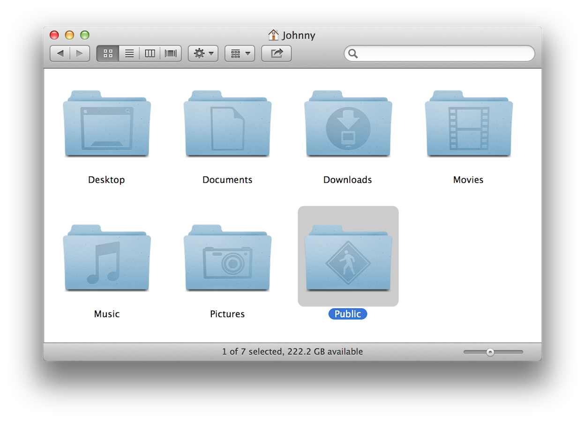
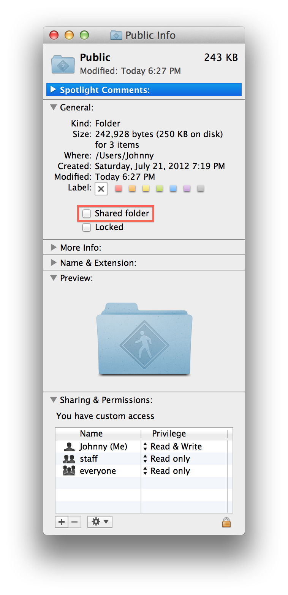
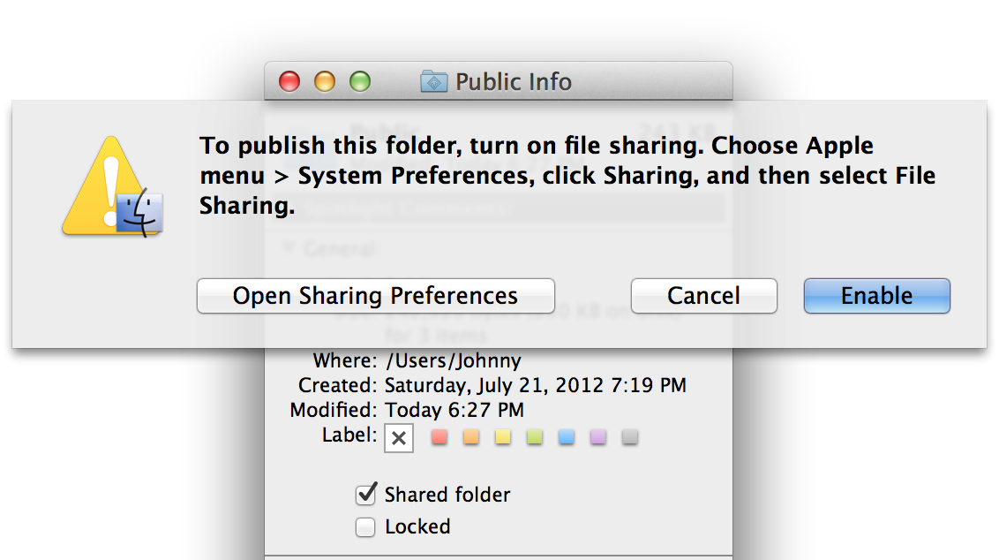
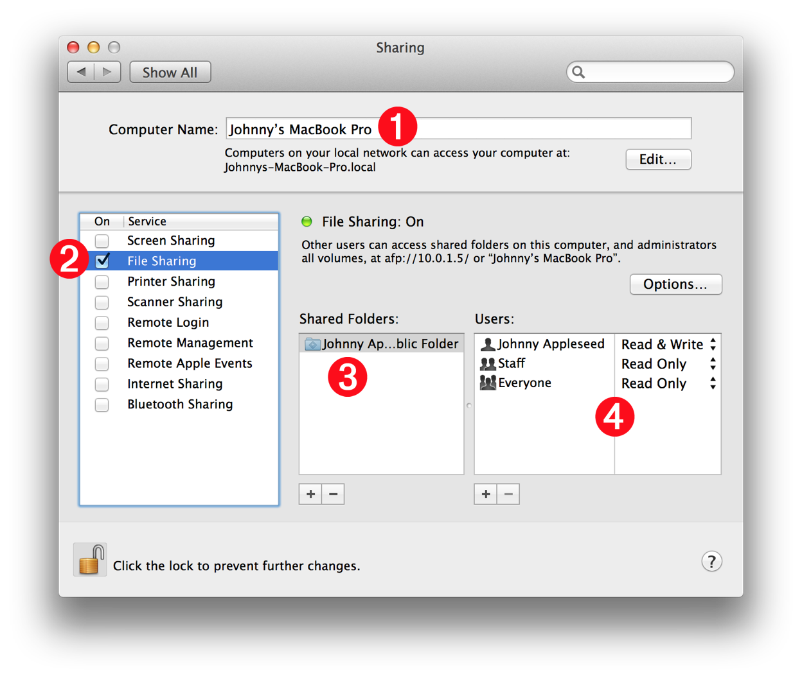
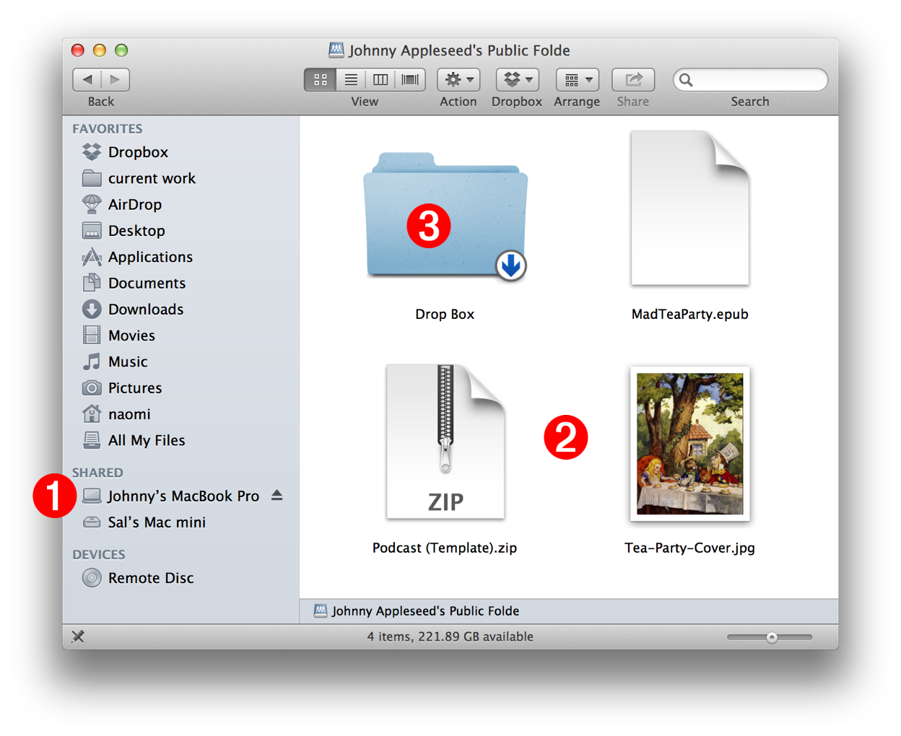
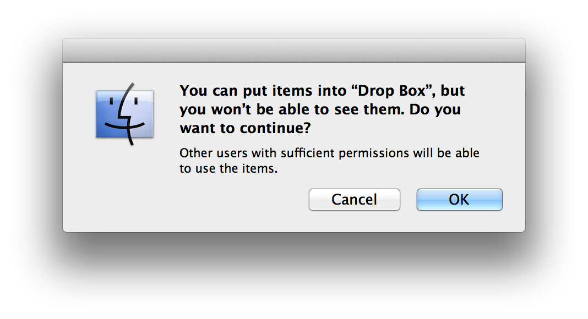
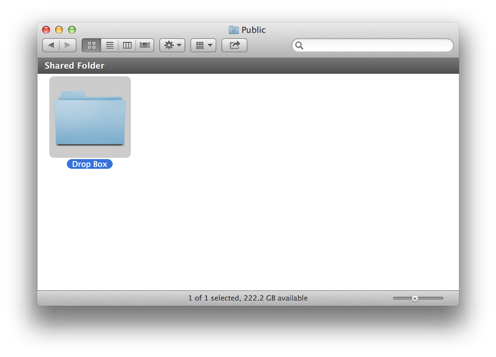

Because of its UNIX underpinnings, easy-to-use secure file-sharing has always been a hallmark feature of Apple computers and OS X. Every copy of OS X comes with a preset sharing framework, specifically designed to easily allow you to share and receive files, documents, and folders, with other users on your network.
In this workshop segment, you will learn how to activate personal file sharing on your computer, and how to take advantage of the integrated Public an Dropbox folders in your Home directory.


Personal file sharing in OS X begins with your Public folder. Located in your Home directory (see above), the Public folder is designed to be the sharing interface of your computer to the other computers on your network.
Documents, files, and folders placed in your Public folder by you, will be accessible to the other users on your network. They will be able to copy and view your public items on their computers.
The first step in setting up personal file sharing on your computer will be to adjust the sharing settings of your Public folder:
DO THIS ►In a Finder window displaying your Home directory, select the Public folder (see above), and type Command-I (⌘-I) to display its information window (see left).
In the General panel of the folder’s information window, is a checkbox for enabling the sharing of the contents of your Public folder. The checkbox is titled “Shared folder” and its status indicates whether sharing for your Public folder is enabled or disabled.
DO THIS ►In the Public folder’s information window, click the checkbox titled Shared folder (see above left) to enable the sharing of the contents of your Public folder.
Once you have selected the checkbox in the information window, an alert sheet will appear (see below) reminding you to turn on File Sharing on your computer. NOTE: this alert sheet will not appear if File Sharing is already turned on for your computer.
DO THIS ►If the alert sheet is visible, press the Enable button in the sheet, to turn on the File Sharing service for your computer. You may now close the information window.

All of the controls and parameters for file sharing on your computer are displayed within the Sharing preference pane, located in the System Preferences application (see below).

Details regarding the relevant controls are described below:
1 Computer Name - This text input field displays the name of your computer as others see it on the network. The default network name of your computer was automatically chosen for you when you first setup your computer, but it can be edited by you to any name of your choosing.
1 Local Network Address - Below the Computer Name is text indicating the local network address of your computer, based on the current computer name. A local network address cannot contain spaces or special characters, which are replaced by dashes and underscore characters if needed. NOTE: advanced users can create a custom local network address by clicking the Edit button on the right.
2 Sharing Services - This scrolling field contains a list of the sharing services available for your computer. The status of each service is controlled using the checkboxes to the left of their names. The File Sharing service should already be active. If it is not, select the checkbox to its left.
3 Shared Folders - This scrolling field contains a list of the folders shared by the current user of your computer. Select a folder name in this list to view its sharing permissions in the field to the right 4 .
4 Users & Permissions - This scrolling field contains a list of the users who are allowed access to the shared folder selected in the list on the left 3 . To the right of each user or group name is a popup menu displaying the actions allowed by that user. By default, you are allowed to read and write to the folder, while everyone else on the network is only allowed to read (copy) items in the Public folder.
NOTE: There are advanced controls for adding individuals to the Users & Permissions list and giving them custom access to shared folders. To maintain the security of your computer, only attempt this if you know what you are doing.
This content segment is about how the other network users can access your shared items, and how they can share items with you.
The image below is of a Finder window on the computer of another user on your network. It shows how they access and view the contents of your shared Public folder.

1 Computer Name - The name entered in the Computer Name field in the Sharing preferences on your computer, is the name that appears in the sidebar of Finder windows on the computers of other users on your network. When a network user wants to access your Public folder, they simply select your computer name in their sidebar. Their computer will automatically connect to (or “mount”) your Public folder, and the contents of your Public folder will then be displayed in their Finder window.
2 Shared Items - The items placed by you in your Public folder are accessible to other network users. With the sharing settings on your computer set to their default values, other users may copy these items to their computers by simply dragging the icons of the shared items to their desktop or other folder on their computer.
3 Your Dropbox - Your default sharing settings allow other network users who have accessed your Public folder, to only copy items from your Public folder. They are not allowed to copy items to your Public folder. The Dropbox folder in your Public folder is a special folder to which they can copy items from their computers to your computer. (see next content segment for details)
As mentioned above, the Dropbox folder in your Public folder is a special folder to which other network users can copy items from their computers to your computer.
Because your Public folder may be accessed by multiple network users at the same time, your secure privacy settings dictate that network users who copy items to your Dropbox folder, are not allowed to see what items have been placed in the Dropbox folder by other network users. This way, only you are allowed to know what items have been shared with you.
When a network user copies an item to your Dropbox folder, the alert shown below appears, informing them of this privacy rule:

Of course, you always have access to the Dropbox folder within your Public folder (see below). NOTE: Folders whose contents are shared, will display a dark gray bar across the top of their Finder windows, indicating their status as a shared folder (see below).
